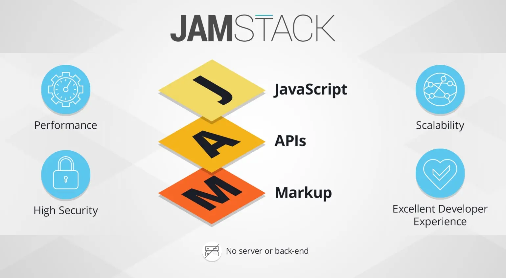

Últimas Tecnologías Web
WebAssembly (Wasm): Es un estándar abierto que define un formato binario portátil para programas y una máquina virtual para ejecutarlos. Diseñado para la web, Wasm permite ejecutar código de alto rendimiento en navegadores web y otros entornos. Los desarrolladores pueden escribir código en lenguajes como C, C++, Rust y otros, y luego compilar ese código a WebAssembly, que puede ejecutarse junto con JavaScript en el navegador. El impacto que tendria WebAssembly es el de poder ejecutar código a una velocidad casi nativa, mejorando significativamente el rendimiento de aplicaciones web complejas. Esto es especialmente beneficioso para aplicaciones que requieren cálculos intensivos, como juegos 3D, simulaciones científicas, edición de video y audio, y herramientas CAD.
Jamstack: Es una arquitectura moderna para el desarrollo web que se centra en la rapidez, la seguridad y la eficiencia. Su nombre se deriva de sus tres componentes fundamentales: JavaScript, APIs y Markup. Esta metodología está revolucionando la forma en que se construyen sitios web y aplicaciones, permitiendo experiencias de usuario más rápidas y seguras, y simplificando el proceso de desarrollo. En el núcleo de Jamstack está la idea de pre-generar el contenido HTML durante el proceso de construcción y servirlo desde redes de entrega de contenido (CDNs). Esto asegura que las páginas se carguen rápidamente, independientemente de la ubicación del usuario. Además, la lógica del cliente se maneja con JavaScript, que interactúa con APIs para obtener datos dinámicos, eliminando la necesidad de servidores tradicionales y mejorando la escalabilidad y la seguridad.
